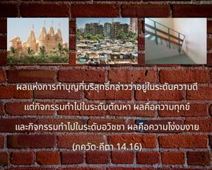
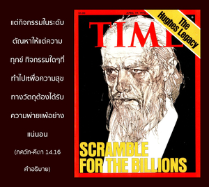

ผลแห่งการทำบุญที่บริสุทธิ์กล่าวว่าอยู่ในระดับความดี แต่กิจกรรมทำไปในระดับตัณหา ผลคือความทุกข์ และกิจกรรมทำไปในระดับอวิชชา ผลคือความโง่งมงาย


ผลของการทำบุญอยู่ในระดับความดีบริสุทธิ์ ดังนั้น นักปราชญ์ผู้เป็นอิสระจากความหลงทั้งปวงจะสถิตในความสุข แต่กิจกรรมในระดับตัณหาให้แต่ความทุกข์ กิจกรรมใดๆ ที่ทำไปเพื่อความสุขทางวัตถุต้องได้รับความพ่ายแพ้อย่างแน่นอน ตัวอย่างเช่น หากต้องการมีตึกระฟ้า ก็ต้องผ่านความทุกข์ยากมากมายของมนุษย์ก่อนที่จะสร้างตึกระฟ้าขนาดใหญ่ได้ นักการเงินต้องมีปัญหามากมายในการหาเงินทุนจำนวนมหาศาล และพวกที่ใช้แรงงานก่อสร้างต้องทำงานอย่างหนักด้วยความทุกข์ยากลำบากกาย ดังนั้น ภควัท-คีตา กล่าวว่า กิจกรรมใดทำลงไปภายใต้มนต์สะกดของระดับตัณหา แน่นอนว่าต้องมีความทุกข์มหาศาล เราอาจคิดว่ามีความสุขทางใจอยู่บ้าง เช่น “ฉันมีบ้าน หรือว่า ฉันมีเงิน” แต่นี่ไม่ใช่ความสุขที่แท้จริง
สำหรับระดับอวิชชานั้น ผู้กระทำไม่มีความรู้ ดังนั้น กิจกรรมทั้งหมดมีผลเป็นความทุกข์ทั้งในปัจจุบัน และอนาคต เพราะการจะมีชีวิตเป็นสัตว์เดรัจฉานชีวิตสัตว์นั้นมีความทุกข์อยู่เสมอ ถึงแม้ว่าอยู่ภายใต้มนต์สะกดของพลังแห่งความหลง หรือมายา สัตว์เดรัจฉานจะไม่เข้าใจ การฆ่าสัตว์ผู้น่าสงสารก็เนื่องมาจากระดับอวิชชาเช่นกัน คนฆ่าสัตว์ไม่รู้ว่าในอนาคตสัตว์ตัวนั้นจะมีร่างกายที่เหมาะสมที่จะมาฆ่าตนเองได้ นั่นคือกฎแห่งธรรมชาติ ในสังคมมนุษย์หากผู้ใดฆ่าคนตามกฎของรัฐจะถูกลงโทษขั้นประหารชีวิตเช่นกัน เนื่องด้วยอวิชชาผู้คนจึงไม่สำเหนียกว่ามีองค์ภควานฺควบคุมรัฐอย่างสมบูรณ์ ทุกๆ ชีวิตเป็นบุตรขององค์ภควานฺ พระองค์ทรงทนไม่ได้ที่แม้แต่มดตัวหนึ่งถูกฆ่า ผู้ฆ่าต้องชดใช้กรรม ดังนั้น การตามใจตัวเองในการฆ่าสัตว์เพื่อให้ได้รับรสเป็นอวิชชาที่หยาบที่สุด มนุษย์ไม่มีความจำเป็นที่จะต้องฆ่าสัตว์ เพราะว่าองค์ภควานฺทรงจัดส่งสิ่งดีๆ ให้มากมาย หากยังตามใจตัวเอง และรับประทานเนื้อสัตว์อีกเท่ากับกระทำไปในอวิชชา และจะทำให้อนาคตของตนเองมืดมน ในบรรดาการฆ่าสัตว์ทั้งหมดการฆ่าวัวนั้นเป็นสิ่งที่โหดร้ายที่สุด เพราะวัวให้ความสุขแก่มนุษย์มากมายด้วยการให้นม การฆ่าวัวเป็นการกระทำในอวิชชาที่หยาบที่สุด ในวรรณกรรมพระเวท (ฤคฺ เวท 9.46.4) คำว่า โคภิห์ ปฺรีณิต-มตฺสรมฺ แสดงว่าผู้ใดที่พึงพอใจกับการดื่มนมเป็นอย่างมาก แล้วยังปรารถนาที่จะฆ่าวัวอีก ผู้นั้นอยู่ในอวิชชาที่หยาบที่สุด มีบทมนต์ในพระเวทกล่าวว่า
นโม พฺรหฺมณฺย-เทวาย
โค-พฺราหฺมณ-หิตาย จ
ชคทฺ-ธิตาย กฺฤษฺณาย
โควินฺทาย นโม นมห์
“โอ้ องค์ภควานฺ พระองค์ทรงเป็นผู้ปรารถนาดีต่อโค และพฺราหฺมณ (พราหมณ์) ทรงเป็นผู้ปรารถนาดีต่อสังคมมนุษย์ และโลกทั้งหมด” (วิษฺณุ ปุราณ 1.19.65) คำอธิบายก็คือ ได้กล่าวไว้เป็นพิเศษในบทมนต์นี้เพื่อเป็นการปกป้องโค และพราหมณ์ พฺราหฺมณ เป็นสัญลักษณ์แห่งการศึกษาวิถีทิพย์ และโคเป็นสัญลักษณ์แห่งอาหารที่มีคุณค่ามากที่สุด สิ่งมีชีวิตทั้งสองนี้ คือ พราหมณ์ และโค ต้องได้รับการปกป้องคุ้มครองอย่างดีที่สุด นั่นคือความเจริญก้าวหน้าอย่างแท้จริงแห่งความศิวิไล สังคมมนุษย์ปัจจุบันละเลยความรู้ทิพย์ และสนับสนุนการฆ่าวัว เข้าใจได้ว่าสังคมมนุษย์พัฒนาไปในทิศทางที่ผิด และกำลังเปิดทางเพื่อทำลายตัวเอง ความศิวิไลที่ชี้นำประชาชนให้กลายมาเป็นสัตว์เดรัจฉานในชาติหน้า แน่นอนว่าไม่ใช่เป็นความศิวิไลของมนุษย์ และแน่นอนว่าความศิวิไลของมนุษย์ปัจจุบันถูกนำโดยระดับตัณหา และอวิชชาอย่างหยาบซึ่งเป็นยุคที่อันตรายมาก ทุกประเทศควรสนใจและส่งเสริมการเผยแพร่กฺฤษฺณจิตสำนึก ซึ่งเป็นวิธีที่ง่ายที่สุด เพื่อช่วยมนุษยชาติจากภัยอันตรายอันใหญ่หลวงนี้